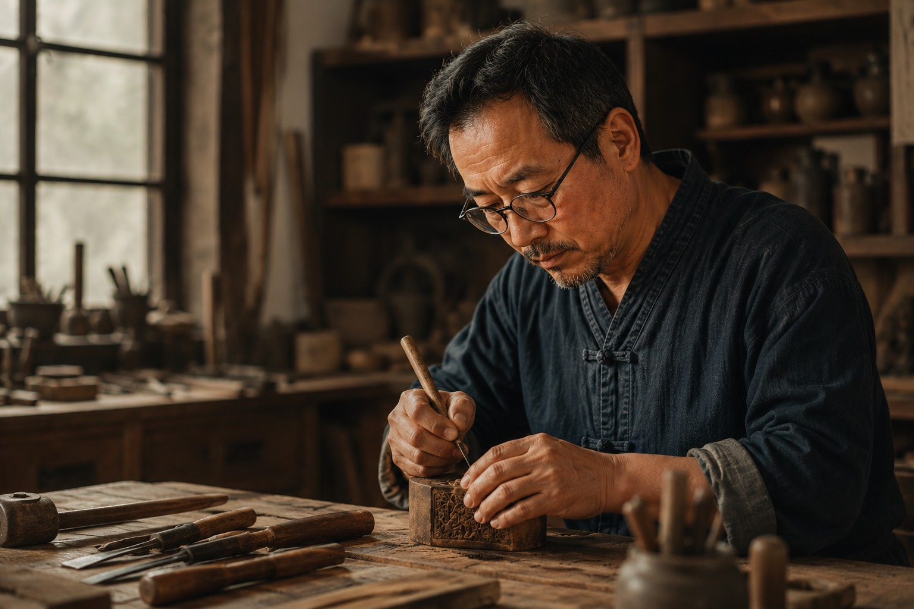

第五場手作坊完成
參與者從竹骨開始理解一把傘的結構，也留下自己的地方色彩。
Digital craft passport · Demo
這是購買美濃油紙傘後，手機感應 NFC 會看見的真實體驗：作品身分、製作故事、共養資金與復甦進度，都在同一份持續更新的技藝履歷裡。

Revival mission
每完成一個階段，技藝就多一個被看見、被學習與再次使用的機會。
Field notes
共養者不只看到數字，也能看見支持如何轉成一次教學、一段紀錄與一場地方展覽。
參與者從竹骨開始理解一把傘的結構，也留下自己的地方色彩。

傘骨角度的一點差異，就會改變開合手感；這也是手工價值所在。

作品完成後寫入工序、材質與保養資訊，成為可被追溯的文化物件。
Inside the passport
編號、材質、工坊與完成日期。
從削竹、製骨到上油彩繪。
共養提撥與任務使用進度。
中文、台語、客語、英語與日語。
From purchase to participation
當作品被帶回生活，故事仍會更新。這就是記藝共養所把一次購買轉成長期參與的方式。